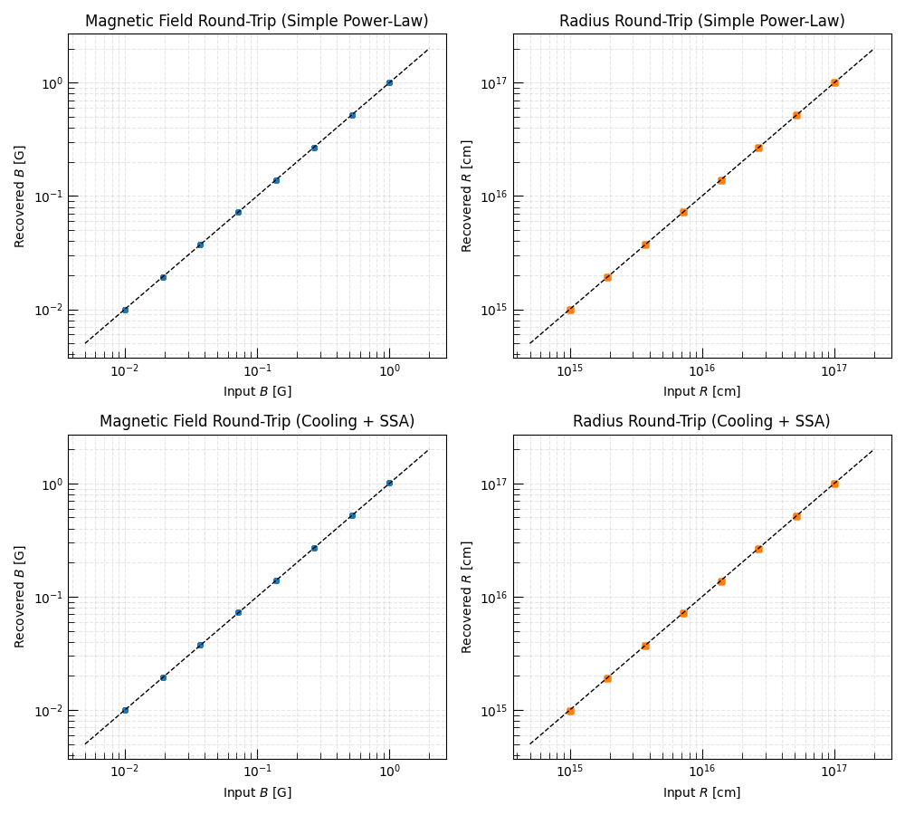

Note
Go to the end to download the full example code.
Recovering Physical Parameters from an Observed SED: the Inverse Closure#
The inverse closure maps observed SED parameters — peak flux \(F_{\rm peak}\), peak frequency \(\nu_{\rm peak}\), and spectral regime — back to the physical properties of the emitting region: magnetic field \(B\), emitting radius \(R\), and electron distribution parameters.
This procedure underlies most analyses of synchrotron radio afterglows. Broadband observations constrain spectral breaks and flux normalization, and closure relations are then used to infer the underlying shock parameters.
Warning
Closure relations assume a single homogeneous emission region with a uniform magnetic field and a single power-law electron population. Real sources may deviate from this idealization, so the inferred \(B\) and \(R\) should be interpreted as effective single-zone quantities.
This example demonstrates:
Generating synthetic SED observables from a grid of \((B,R)\) values (forward closure).
Recovering the physical parameters from those observables (inverse closure).
Testing the round-trip accuracy of the inversion.
Relevant API References#
from_physics_to_params()from_params_to_physics()from_physics_to_params()from_params_to_physics()
import matplotlib.pyplot as plt
import numpy as np
from astropy import units as u
from triceratops.radiation.synchrotron.SEDs import (
PowerLaw_Cooling_SSA_SynchrotronSED,
PowerLaw_SynchrotronSED,
)
from triceratops.utils.plot_utils import set_plot_style
set_plot_style()
Fixed Microphysics#
gamma_min = 1.0
gamma_c = 3000.0
p = 3
epsilon_E = 0.1
epsilon_B = 0.1
D_L = 100 * u.Mpc
sed_pl = PowerLaw_SynchrotronSED()
sed_full = PowerLaw_Cooling_SSA_SynchrotronSED()
Forward Closure: Physical → Observable#
B_grid = np.geomspace(0.01, 1.0, 8) * u.G
R_grid = np.geomspace(1e15, 1e17, 8) * u.cm
B_flat = []
R_flat = []
nu_peak_pl_fwd = []
F_peak_pl_fwd = []
nu_peak_full_fwd = []
F_peak_full_fwd = []
regime_full_fwd = []
base_kwargs = dict(
gamma_min=gamma_min,
p=p,
epsilon_E=epsilon_E,
epsilon_B=epsilon_B,
luminosity_distance=D_L,
gamma_max=1e8,
f_V=1.0,
pitch_average=True,
)
for B in B_grid:
for R in R_grid:
B_flat.append(B.to_value(u.G))
R_flat.append(R.to_value(u.cm))
# --- Simple PL model ---
pars_pl = sed_pl.from_physics_to_params(
B=B,
R=R,
**base_kwargs,
)
nu_peak_pl_fwd.append(pars_pl["nu_m"])
F_peak_pl_fwd.append(pars_pl["F_peak"])
# --- Full Cooling + SSA model ---
pars_full = sed_full.from_physics_to_params(
B=B,
R=R,
f_A=1.0,
gamma_c=gamma_c,
**base_kwargs,
)
nu_peak_full_fwd.append(pars_full["nu_peak"])
F_peak_full_fwd.append(pars_full["F_peak"])
regime_full_fwd.append(pars_full["regime"])
B_flat = np.array(B_flat)
R_flat = np.array(R_flat)
nu_peak_pl_fwd = u.Quantity(nu_peak_pl_fwd)
F_peak_pl_fwd = u.Quantity(F_peak_pl_fwd)
nu_peak_full_fwd = u.Quantity(nu_peak_full_fwd)
F_peak_full_fwd = u.Quantity(F_peak_full_fwd)
print(f"Grid size: {len(B_flat)} (B,R) pairs")
print(f"Regimes encountered (full model): {set(regime_full_fwd)}")
Grid size: 64 (B,R) pairs
Regimes encountered (full model): {'Spectrum4'}
Inverse Closure: Observable → Physical#
B_rec_pl = []
R_rec_pl = []
B_rec_full = []
R_rec_full = []
for i in range(len(B_flat)):
# --- Simple model ---
phys_pl = sed_pl.from_params_to_physics(
F_peak=F_peak_pl_fwd[i],
nu_peak=nu_peak_pl_fwd[i],
gamma_min=gamma_min,
gamma_max=1e8,
f_V=1.0,
p=p,
epsilon_E=epsilon_E,
epsilon_B=epsilon_B,
luminosity_distance=D_L,
pitch_average=True,
)
B_rec_pl.append(phys_pl["B"].to_value(u.G))
R_rec_pl.append(phys_pl["R"].to_value(u.cm))
# --- Full model ---
phys_full = sed_full.from_params_to_physics(
regime=regime_full_fwd[i],
F_peak=F_peak_full_fwd[i],
nu_peak=nu_peak_full_fwd[i],
gamma_min=gamma_min,
gamma_c=gamma_c,
gamma_max=1e8,
f_V=1.0,
f_A=1.0,
p=p,
epsilon_E=epsilon_E,
epsilon_B=epsilon_B,
luminosity_distance=D_L,
pitch_average=True,
)
B_rec_full.append(phys_full["B"].to_value(u.G))
R_rec_full.append(phys_full["R"].to_value(u.cm))
B_rec_pl = np.array(B_rec_pl)
R_rec_pl = np.array(R_rec_pl)
B_rec_full = np.array(B_rec_full)
R_rec_full = np.array(R_rec_full)
Round-Trip Fidelity#
fig, axes = plt.subplots(2, 2, figsize=(10, 9))
cases = [
(B_rec_pl, R_rec_pl, "Simple Power-Law"),
(B_rec_full, R_rec_full, "Cooling + SSA"),
]
for row, (B_rec, R_rec, label) in enumerate(cases):
ax_B = axes[row, 0]
ax_R = axes[row, 1]
B_true = B_flat
R_true = R_flat
lim_B = [B_true.min() * 0.5, B_true.max() * 2]
lim_R = [R_true.min() * 0.5, R_true.max() * 2]
ax_B.loglog(B_true, B_rec, "o", ms=4, alpha=0.75)
ax_B.loglog(lim_B, lim_B, "k--", lw=1)
ax_B.set_xlabel(r"Input $B$ [G]")
ax_B.set_ylabel(r"Recovered $B$ [G]")
ax_B.set_title(f"Magnetic Field Round-Trip ({label})")
ax_B.grid(True, which="both", ls="--", alpha=0.3)
ax_R.loglog(R_true, R_rec, "s", ms=4, alpha=0.75, color="C1")
ax_R.loglog(lim_R, lim_R, "k--", lw=1)
ax_R.set_xlabel(r"Input $R$ [cm]")
ax_R.set_ylabel(r"Recovered $R$ [cm]")
ax_R.set_title(f"Radius Round-Trip ({label})")
ax_R.grid(True, which="both", ls="--", alpha=0.3)
plt.tight_layout()
plt.show()

Round-Trip Error Statistics#
rel_B_pl = np.abs(B_rec_pl - B_flat) / B_flat
rel_R_pl = np.abs(R_rec_pl - R_flat) / R_flat
rel_B_full = np.abs(B_rec_full - B_flat) / B_flat
rel_R_full = np.abs(R_rec_full - R_flat) / R_flat
print("\nRound-trip relative errors (Simple PL)")
print(f"B: max = {rel_B_pl.max():.2e}, median = {np.median(rel_B_pl):.2e}")
print(f"R: max = {rel_R_pl.max():.2e}, median = {np.median(rel_R_pl):.2e}")
print("\nRound-trip relative errors (Cooling + SSA)")
print(f"B: max = {rel_B_full.max():.2e}, median = {np.median(rel_B_full):.2e}")
print(f"R: max = {rel_R_full.max():.2e}, median = {np.median(rel_R_full):.2e}")
Round-trip relative errors (Simple PL)
B: max = 1.21e-15, median = 5.80e-16
R: max = 9.36e-15, median = 4.72e-15
Round-trip relative errors (Cooling + SSA)
B: max = 6.96e-03, median = 6.96e-03
R: max = 9.20e-03, median = 9.20e-03
Discussion: The Role of the Spectral Regime#
The full Cooling+SSA synchrotron model contains several distinct spectral regimes corresponding to different orderings of the characteristic break frequencies \(\nu_a\), \(\nu_m\), and \(\nu_c\). Each regime corresponds to a different analytic closure relation linking the observed SED parameters to the underlying physical parameters.
Passing the wrong regime into the inverse closure will therefore produce incorrect values of \(B\) and \(R\). In practice, the regime is determined observationally from the measured ordering of the spectral breaks in the broadband SED.
The simpler PowerLaw_SynchrotronSED has only a single break and
therefore no regime ambiguity. It is appropriate when the source is
optically thin and uncooled across the observed band.
See the forward-closure example for how the characteristic break frequencies scale with the physical parameters.
Total running time of the script: (0 minutes 1.854 seconds)